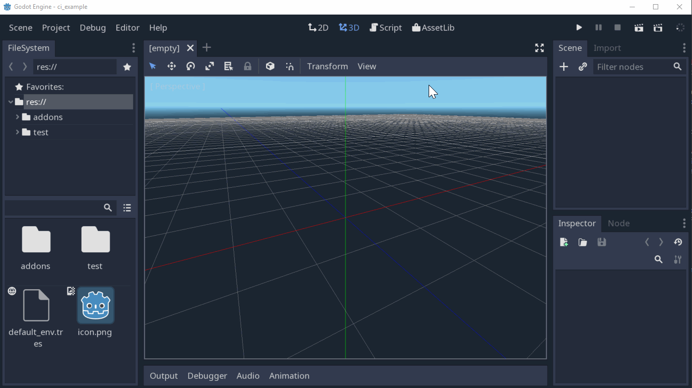

Setting up your own is easy peasy and possibly free!
⚒️ Pipeline overview
Someone pushes to the master branch on the remote repo.
The game is exported for all available platforms. In this case: Windows, Linux, MacOS and HTML5.
A new Github release is created with attached files, one per platform.
The release artifacts are pushed as new versions of the game to itch.io.
ü§ñ Configure Godot exports
First, you need to setup the export settings in your Godot project. The official exporting guide explains it perfectly. The thing to keep in mind here is that the preset name will determine the name of the published artifact. For example, a preset called plague-mac will result in a release with an attached file called plague-mac.zip.
In the case of our jam entry, we targeted MacOS, Windows, Linux and HTML5.
üì¶ Export the game
Create a .github/workflows/export_game.yaml file in your repo. We will tell our new action to run on every push to master. We don’t want new releases on commits that do not actually change the game. Our Godot project lives in the game folder, so we tell the action to only run if there are changes in that folder.
on:
push:
branches:
- masterpaths:
- 'game/**'
For the actual export step, we will leverage the Godot Export Github action. The README.md explains its usage very well.
For the action to work, you need to create a personal access token, which will give the export action write access to create a new release. First, create a new token. Then go to https://github.com/<org>/<repo>/settings/secrets/new, paste the key and name the secret EXPORT_GITHUB_TOKEN.
Here’s our config in case it helps you. We setup the base version to be published, the links to download the Godot headless executable as well as the templates and tell it our project is located in the game folder in the repo.
Butler is the itch.io CLI, which lets you upload builds of your game. Our publish Github action will need to talk to itch.io using a valid API key. In order to get one, install butler and generate a key via butler login. Refer to the docs for the details.
Then, copy your Butler API key and go to https://github.com/org/repo/settings/secrets and create a BUTLER_CREDENTIALS entry with the contents of the key.
Our workflow needs to contain a job per platform we want to publish. Each job will leverage the Fetch GH Release Asset and Butler Push actions. We first download the latest release artifact for the platform we want to export and then we call the butler action to push the build to itch.io. When pushing multiple times to the windowschannel, each will be considered a new version of the same “product.
Here you can use the secrets.GITHUB_TOKEN, which is automatically populated.
That’s it! Once you push the publish workflow and make a change to the game, Github will export, create a new release and update your game on itch.io.
On your itch.io game page, you should see something like:
One last thing to remember is that you need to manually tag your HTML build as browser playable from the itch.io website as specified in the Butler docs.. You will only need to do this once as long as future HTML builds have the same channel.
✅ Advantages
⏳ Automated. Do not waste time exporting your game regularly and updating various stores.
üöÄ Fast. Exporting and publishing for a jam sized game takes only 2 minutes.
üé• Restrospect. Check out how your game looked at an arbitrary point in the past without opening the editor.
üí∞ Cost effective. You get unlimited GH Actions minutes for open source projects and 3000 minutes for the Pro plan. That could easily equal 600 builds a month!
ü§∏ Flexible. No need to publish on every push, you can change the triggers to publish on every push to a release branch or simply on a fixed schedule.
üî≠ Extensible. Add jobs to publish to other stores or platforms.
It would be amazing if you let me know your thoughts on this solution. Maybe you have a much better automated process or ideas on how to improve this one!
My friend Jay and I recently took part in Godot Wild Jam, a week long game jam where entries must be made using Godot Engine.
We had an absolute blast! The result is Plague, a procedurally generated action platformer. You can play it in the browser and use either a gamepad or keyboard!
Don’t congratulate us on the visuals just yet, we used the Rogue Noir asset pack. However, you can check out our messy code on Github.
The main theme of the Jam was “Plague” although there were three aditional optional wildcards:
üï∫ 80s Baby! - Recreate the visual style of 1980s media.
üé≤ Take a chance on me - Create a system of chance in your game.
☔ I wish it would rain - Implement weather effects.
Even though many aspects of the game could be improved, we’re quite satisfied with the outcome. Especially because we had to manage day jobs and other compromises alongside the jam. Hopefully, I will get around to write a full post-mortem after the voting period ends and the final results come out.
In the meantime, give it a go and let us know what you think!
This weekend FOSDEM 2020 will take place in Brussels. FOSDEM is a yearly conference about open source software. It’s totally free and no registration is required. As a consequence, it’s massive and chaotic, but also a lot of fun! I attended in 2017 and loved it, so I really look forward to this year’s edition.
If this is your first time, here’s a few tips that may come in handy.
I encourage you to download the companion app and build your own schedule. You can bookmark all the sessions you may be interested in and the app will nicely highlight conflicts.
Quite frequently, you get a very popular talk in a very small room. Room capacity is strictly monitored for safety reasons. Full signs will be posted othe door. With 8000 attendees, it may get tricky. I recommend arriving to the room for the session that precedes the one you absolutely don’t want to misss. Worst case scenario, you can stream any session live.
There’s always interesting people and conversations outside the rooms. I typically get very anxious about socialising in this context. However, it’s something I want to work on. I hardly ever regret getting over the initial awkwardness.
Transport and accommodation
The Solbosch Campus is not in the center, 1h walk from Grand Place. It’s relatively well connected with a couple buses and trams going there. With so many people, public transport and Uber will get busy. Be careful if you have to rush off right after closing!
A good area to stay is between the center and the venue. A good compromise that will make it easy to move around. Accommodation in Brussels is not super cheap by default. With so many people attending, prices will rise. Make sure to book in advance!
Food
The center of Brussels is packed with places to eat of all price ranges. However, it’s a different story at the venue. You can choose between the cafeteria or the food trucks outside. Both will be crowded and won’t have great variety. At least, the cafeteria staff are quite fast.
Alternatively, there’s a couple of places you can grab a quick bite walking distance from the campus.
Satellite events
There are quite a few events organised around the FOSDEM weekend. Make sure to check them out in case you want to adjust your travel dates. For example, the Godot community is organising a couple.
Brussels is a great city. If you’ve never visited, it would be a shame to spend all of your time at the conference. Make sure to check it out!
Beer
Belgium is world famous for its beer. There are thousands of interesting brews to check out. FOSDEM even organises a beer event on Friday. Be careful though, Belgian beers are famously strong. Beer is also available during the day at the venue.
Make sure to stay hydrated (with water!) to avoid a massive hangover on the first day of the conference. Do not forget to follow the code of conduct, it also applies to all associated events.
Unfortunately, if you don’t drink alcohol, the Friday event may not be your vibe.
I had been using a DigitalOcean droplet to host this blog and personal projects for years. But… Do I really need to spend the $6/month? It’s just a static Hugo site, which Github pages can do for free. Game hosting on itch.io is also free, it even gives you a mechanism to embed your web games. Looks like I’d be sorted!
Here’s a simple CD workflow for deploying a Huge site to Github pages.
Setup your production Github pages repo
Create a Github repo with the name <username>.github.io. Make sure it has a README.md so that you can start pushing to it. Anything pushed to this repo will be accessible from http://<username>.github.io. This will be your production repository. If you have a PRO Github account, you can make the repo private. This means users will be able to access the github.io site but not the repo sources.
Create your dev repository
Create a new repo to host your dev Hugo site from which we will deploy to the production repo. Name it something like <username>.github.io-dev. That’s where you will write your Hugo pages in Markdown.
Configure the CD pipeline
Whenever we push to our dev repo, we will build the site and deploy it to the production repo. For that, we will leverage Github Actions. For the dev repo to publish to the production repo, we need them to exchange keys.
After you push this file and every time you push to dev, the Build and Deploy action will be triggered. It will checkout the dev repo, install the latest Hugo binary, build your site and deploy to the master branch of your production repo. Once it’s done, the latest version of your site will be available on https://<username>.github.io.
Even though my blog contains hundreds of posts, images and files, Build and Deploy takes less than 1 minute!
Make your domain point to your Github Pages
Obviously, this step only applies if you have your own domain. Go to your provider’s admin panel and change your domain’s DNS records.
Enter 4 A records with @ hosts and the Github Pages IPs:
185.199.108.153
185.199.109.153
185.199.110.153
185.199.111.153
Enter a CNAME record with www and value <username>.github.io.
The screenshot below shows the Namecheap DNS config panel for my account.
Finally, go to your dev repo and create a static/CNAME file with your domain name. For example, mine contains:
saltares.com
Once that is done and deployed to production, you should see the following in your production repository Settings, inside the Github Pages section. Tick the “Enforce HTTPS” to redirect all traffic from http://<domain> to https://<domain>.
Note that this may take up to 24h to work as your new DNS settings propagate, so be patient!
Done!
It takes some setup but the result is a pretty convenient workflow, definitely an improvement over the git hook based setup I had before.
Nowadays, most people agree that automated testing is absolutely crucial for
all software development. Not so much when it comes to games development though.
I still believe that the games industry would be able to iterate and ship faster by introducing unit and integration testing in the right places.
Godot and Gut
Butch Wesley appears to be onboard, considering
he created Gut, an automated testing framework
for the Godot Game Engine. Gut provides you with a collection of utilities to write and run tests for your game. Out of the box you get basic assertions, test doubles and even full node tree simulation.
Tests are run either from the Godot Editor or the command line using the godot executable itelf.
That is why I experimented with running GDScript tests on a Continuous
Integration pipeline using the headless Godot runtime. I created a repo
godot-ci-example you can copy
to use on your own projects. Here is how it works.
Firstly, create a Godot project, install Gut from the Asset Library and enable it.
This is the same as what is explained in Gut’s Install and Command Line wiki pages.

Create a trivial test in res://test/unit/test_example.gd.
extends"res://addons/gut/test.gd"func test_assert_true_with_true():
assert_true(true, "Should pass, true is true")
You can now run these tests from the command line.
Where godot is your Godot binary and project is the folder where your game lives.
Alright, we now have a basic test setup we can run locally. Let’s move onto the meaty
part of the article, continuous integration. I’ll be using
Travis CI because it’s easy and free for open source projects hosted on Github, but knock yourself out with your CI system of choice.
Travis looks for a .travis.yml file in the root of your repo. This file tells Travis how to build the project and run tests. I recommend you take a quick look at the docs.
The run_tests.sh script will download the headless Godot runtime and run the command we showed above. Make sure run_tests.sh has executable permissions.